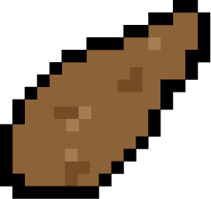

The Yam Harvest Game
Score: 0 
00:00
Rules:
Welcome to New Caledonia, a beautiful French archipelago in the South Pacific Ocean! Its inhabitants are called Caledonians and among them live the Kanak, whose culture is based on ancestral traditions such as the harvesting of the yam (tuber)!
Dive into a Kanak tribe and help a farmer to harvest as many yams as possible for his tribe in less than 1 minute with: ◀️ ▶️ 🔼 🔽.
Beware of poisonous mushrooms during your harvest or you will kill our farmer and ruin the crop!
Hint: if too many mushrooms block your path, press keyQ (A) to cut them!